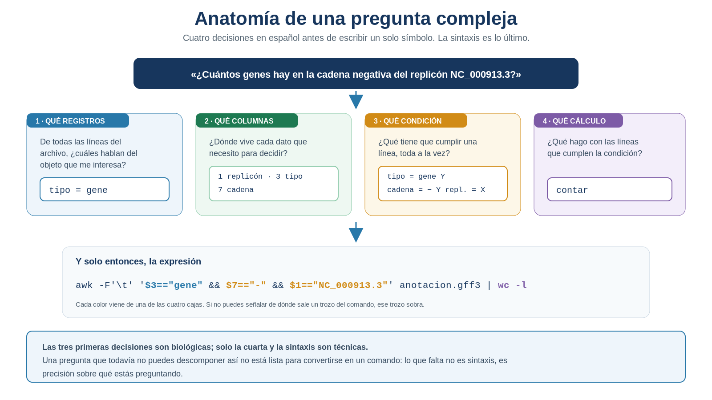
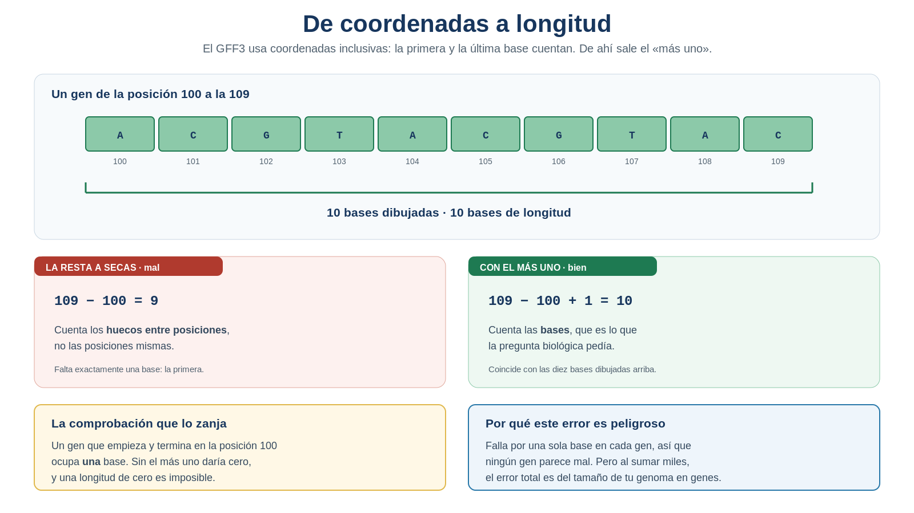
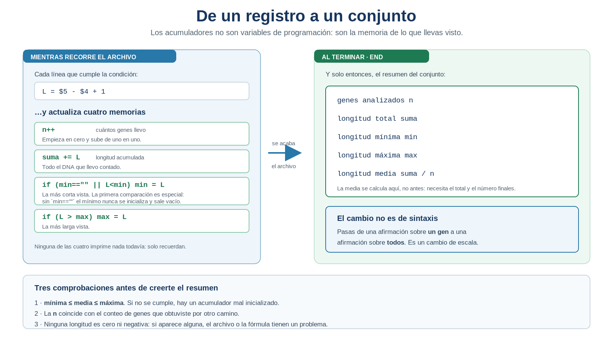
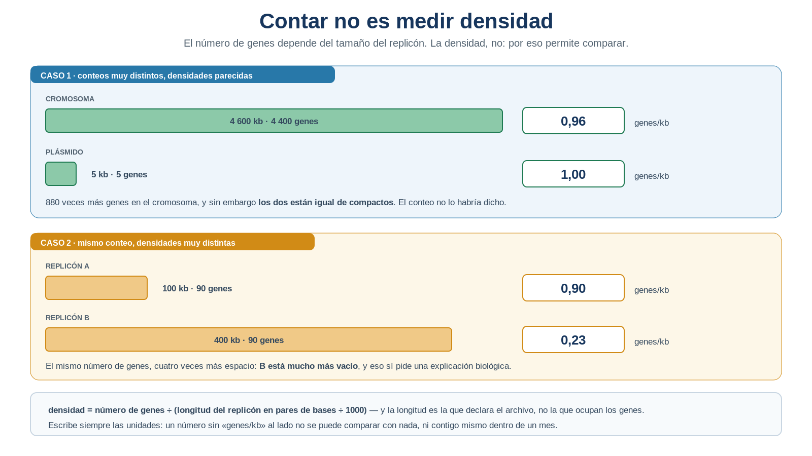

S22 — Condicionar y calcular: preguntas complejas sobre columnas
Antes de clase leerás las secciones marcadas como indispensables y harás un primer intento: descomponer tres preguntas biológicas en registros, columnas, condición y cálculo, sin escribir un solo comando. Durante el taller aprenderás a expresar esas condiciones y a calcular medidas derivadas de las coordenadas. Después cerrarás la pregunta del tamaño del genoma, medirás la magnitud de las discrepancias que dejó S21 e integrarás en doc/protocolo.md la sección Análisis condicionado y medidas derivadas.
El primer intento es formativo: importa que separes la pregunta biológica de su implementación, no que adivines la sintaxis.
Ficha del módulo
| Elemento | Descripción |
|---|---|
| Sesión | S22, 2 horas |
| Unidad | U4. Procesamiento y exploración de datos genómicos |
| Competencia principal | D. Análisis y exploración de datos genómicos |
| Competencias integradas | A. Documentación reproducible; B. Entorno Unix; C. Manejo de datos biológicos |
| Propósito | Expresar preguntas que combinan condiciones sobre varias columnas y calcular medidas derivadas de las coordenadas, verificando cada resultado |
| Consulta previa del Plan | S22 · Formateo de datos con awk · Tarea 7; este módulo lo sustituye como lectura autocontenida |
| Continuidad | S21 contó las diferencias; S22 las mide |
| Lectura indispensable | Secciones 1–8 de este módulo (~55 min) |
| Lectura de consulta | Sección 9; Buffalo (2015), Cap. 7; man awk |
| Primer intento | Práctica 1: descomponer tres preguntas en cuatro partes, 25 min, sin comandos |
| Evidencia | Genes por cadena, longitudes resumidas, densidad por replicón, tamaño final del genoma y magnitud de las discrepancias de S21, cada uno con su verificación |
| Tarea numerada | Tarea 7 — reformatear y condicionar la anotación para responder una pregunta biológica |
Hoy aparece awk, y conviene decir desde el principio qué no es esta sesión: no es un curso de awk. Vas a usar una parte pequeña de esa herramienta, la que hace falta para preguntar por varias columnas a la vez y hacer aritmética. Lo demás no se toca.
Relación con lo que ya sabes
S21 S22
Contar cuántos difieren → Medir cuánto importa esa diferencia
"hay K discrepancias" "esas K miden en total X pares de bases"S21 terminó con tres listas y tres números. Y con una frustración concreta: sabías qué loci difieren, pero no si eran genes completos o fragmentos de sesenta bases; si se concentraban en un replicón o estaban repartidos; si representaban una porción apreciable del genoma o eran irrelevantes.
| Habilidad que ya tienes | Dónde la aprendiste | Qué cambia en S22 |
|---|---|---|
| Filtrar líneas por su contenido | S12, S18 | Ahora la condición combina varias columnas a la vez |
Recortar columnas con cut |
S11 | Deja de bastar: cut selecciona, pero no compara ni calcula |
Contar con wc -l y uniq -c |
S10, S13 | Siguen siendo la forma más clara de agrupar; hoy se combinan con el cálculo |
| Distinguir registro de objeto biológico | S13, S19 | Vuelve, y ahora con consecuencias numéricas: sumar longitudes de registros duplicados infla el total |
| Verificar un resultado por otro camino | Toda la unidad | Cada medida nueva se contrasta con una anterior |
Lo nuevo de hoy no es una herramienta: es que tus preguntas dejaron de ser de presencia y pasaron a ser de magnitud.
Tu lugar en el ciclo de la evidencia
Las seis sesiones que cierran la unidad no enseñan seis herramientas: enseñan los seis pasos por los que una observación se convierte en evidencia científica. Hoy trabajas el quinto.
S18 SELECCIONAR la evidencia correcta ✔ resuelto
S19 IDENTIFICAR el objeto biológico correcto ✔ resuelto
S20 NORMALIZAR la evidencia para compararla ✔ resuelto
S21 CONFRONTAR con una fuente ajena ✔ resuelto
▶ S22 CUANTIFICAR e interpretar ← estás aquí
S23 INTEGRAR el ciclo completo, reproducibleUna diferencia puede ser real y a la vez irrelevante. Distinguir esas dos cosas exige medir, y medir es lo único del ciclo que todavía no sabes hacer.
Dónde estás en la investigación
| Pregunta de la investigación | En S22 |
|---|---|
| ¿De qué tamaño es el genoma? | ✔ Se cierra hoy: quinta y última respuesta, contrastada con S10, S12 y S13 |
| ¿Cuántos genes hay por cadena? | ✔ Se refina hoy: primera respuesta en S18, ahora por replicón |
| ¿Cuánto mide cada gen? | ✔ Se resuelve hoy |
| ¿Qué densidad génica tiene cada replicón? | ✔ Se resuelve hoy |
| ¿Qué magnitud tienen las discrepancias de S21? | ✔ Se resuelve hoy |
| ¿Puede otra persona ejecutar toda la investigación de principio a fin? | ☐ S23 |
Resultados de aprendizaje
Al finalizar la sesión podrás:
- Descomponer una pregunta biológica en cuatro partes: qué registros, qué columnas, qué condición y qué cálculo.
- Explicar por qué una tubería de
grepycutdeja de servir cuando la condición combina varias columnas. - Expresar una condición sobre varios campos y comprobar que selecciona lo que pretendes.
- Calcular la longitud de un registro a partir de sus coordenadas, y justificar el
+1. - Acumular medidas a lo largo de un archivo y resumirlas al terminarlo.
- Distinguir número de objetos de densidad, y calcular esta última con sus unidades explícitas.
- Cerrar la pregunta del tamaño del genoma contrastando las cinco respuestas de la unidad.
- Medir la magnitud de una discrepancia y reinterpretar el resultado de S21 a la luz de esa medida.
- Verificar cada cálculo con un control independiente antes de aceptarlo.
- Comparar dos soluciones correctas y argumentar cuál comunica mejor la pregunta.
Lista de verificación previa
Antes del taller comprueba que tienes:
Ten a mano el protocolo abierto. Hoy vas a contrastar casi todos los números con alguno anterior, y buscarlos uno a uno mientras trabajas rompe el ritmo del taller.
Ruta de S22
| Momento | Qué hacer | Tiempo estimado |
|---|---|---|
| Antes de clase | Leer las secciones 1–8; resolver la Práctica 1 | 55 + 25 min |
| Taller (1.ª hora) | Condicionar sobre varias columnas y calcular longitudes (Prácticas 2 y 3) | 60 min |
| Taller (2.ª hora) | Resumir el conjunto y calcular densidades (Prácticas 4 y 5) | 60 min |
| Después del taller | Cerrar el tamaño del genoma (Práctica 6), medir las discrepancias (Práctica 7) y redactar la sección S22 | 90 min |
Las secciones 1–8 son indispensables; la sección 9 es de consulta y sostiene la Tarea 7.
1. La pregunta que ya no cabe en una tubería [Indispensable]
Intenta responder esta pregunta con lo que sabes:
¿Cuántos genes hay en la cadena negativa del cromosoma?
Se puede. Recortas las tres columnas que necesitas, filtras y cuentas:
grep -Ev '^#' data/source/anotacion.gff3 | cut -f1,3,7 | grep -E $'^NC_000913.3\tgene\t-$' | wc -lFunciona, pero mira lo que hiciste: recortaste tres columnas y luego escribiste un patrón que reconstruye la línea entera con sus tabuladores, en el orden exacto en que cut las dejó. Si mañana necesitas otra columna, cambia el patrón completo. Si el replicón tiene un punto —y lo tiene— el patrón puede coincidir de más. La estrategia funciona por la forma concreta de tu archivo, no porque hayas dicho lo que querías decir. Es la misma sensación que tuviste al final de S13.
Y ahora prueba con esta otra:
¿Cuánto mide cada gen?
Aquí ya no hay tubería que valga. cut te da la columna del inicio y la del final, pero no puede restarlas. grep compara texto, no números. sort -n ordena, pero no calcula. Ninguna de tus herramientas sabe hacer aritmética con dos columnas de la misma línea.
Esa es la limitación que abre la sesión, y no es de comodidad: es de capacidad.
IDEA CLAVE. Tus preguntas cambiaron de naturaleza. Hasta S21 preguntabas qué hay y cuántos hay; ahora preguntas cuánto miden, en qué proporción y dónde se concentran. Las respuestas de presencia se obtienen filtrando; las de magnitud, calculando.
2. Las cuatro partes de una pregunta compleja [Indispensable]
Antes de ninguna herramienta, la disciplina. Una pregunta como “¿cuántos genes hay en la cadena negativa del cromosoma?” contiene cuatro decisiones que conviene tomar por separado, y tres de ellas son biológicas.

Figura 22.1. Anatomía de una pregunta compleja. Las tres primeras decisiones son biológicas; solo la cuarta y la sintaxis son técnicas. Elaboración propia.
Cuando una consulta sale mal, casi nunca es por la sintaxis: es porque alguna de las tres primeras decisiones estaba sin tomar. Por eso la primera práctica de hoy no tiene comandos.
IDEA CLAVE. Si no puedes escribir la condición en español, no la vas a poder escribir en ningún lenguaje. La sintaxis se consulta; la precisión sobre lo que preguntas, no.
Práctica 1 — Traducir preguntas, sin ejecutar nada (antes de clase, primer intento)
Pregunta biológica. ¿Qué necesito decidir, antes de tocar el teclado, para responder una pregunta que combina varias características de un registro?
Objetivo. Separar la pregunta biológica de su implementación.
Antes de clase (primer intento). En doc/s22-primer-intento.md, y sin ejecutar ningún comando:
Rellena la tabla para estas tres preguntas, mirando el diccionario de tu tabla derivada de S20 para saber qué columna es cada cosa:
Pregunta biológica Qué registros Qué columnas Qué condición Qué cálculo ¿Cuántos genes hay en la cadena negativa? ¿Cuánto mide cada gen? ¿Cuántos genes por kilobase tiene cada replicón? Marca lo que te falta. ¿Alguna de las tres necesita un dato que tu tabla derivada no contiene? Dilo: es información sobre tus datos, no un fallo tuyo.
Predice. Para la primera pregunta, ¿esperas un reparto cercano al 50/50 entre las dos cadenas? Justifícalo con lo que viste en S18.
Anticipa el orden de magnitud. ¿Cuánto crees que mide un gen bacteriano típico? Da un número en pares de bases; lo contrastarás en el taller.
Escribe la pregunta que no sabes descomponer. Si alguna de las tres se te resiste, di exactamente en qué parte te atascaste.
Durante el taller. Convertirás cada fila de tu tabla en una expresión ejecutable, y comprobarás si lo que te faltaba era sintaxis o precisión.
Después del taller. La tabla completa entra en el protocolo como el puente entre la pregunta y el comando.
Criterio de logro: tus condiciones están escritas en español y son comprobables —alguien podría decidir, leyendo una línea del archivo, si la cumple o no—.
3. Condicionar sobre varias columnas [Indispensable]
Necesitas una herramienta que vea la línea como campos numerados y pueda compararlos entre sí.
Sintaxis mínima — awk
awk -F'\t' 'condición { acción }' archivo¿Qué hace? Recorre el archivo línea por línea. Para cada línea, si la condición se cumple, ejecuta la acción. Los campos se nombran $1, $2, … según el orden en que aparecen, y -F'\t' declara que el separador es el tabulador.
¿Por qué aparece en esta sesión? Porque es la primera herramienta del curso que puede comparar dos campos de la misma línea y hacer aritmética con ellos. Lo demás que sabe hacer no se usa hoy.
Si omites la acción, imprime las líneas que cumplen la condición —igual que grep, pero preguntando por campos en lugar de por texto—:
awk -F'\t' '$3=="gene" && $7=="-"' data/source/anotacion.gff3 | wc -lLéelo como una frase: para cada línea, si el campo 3 es exactamente gene y el campo 7 es exactamente -, imprímela. Compáralo con la tubería de la Sección 1: la condición ya no reconstruye la línea, nombra cada campo por separado, y añadir una tercera condición es escribir && $1=="…" en vez de rehacer el patrón.
-F'\t' no es opcional
Sin él, awk separa los campos por espacios, y en un GFF3 de RefSeq hay fuentes de anotación con espacio en el nombre, como Protein Homology. En esas líneas, $3 deja de ser el tipo y pasa a ser la segunda mitad del nombre de la fuente: awk '$3=="CDS"' anotacion.gff3 devuelve cero resultados en un archivo que tiene miles de CDS, sin dar ningún error. Compruébalo tú mismo en la Práctica 2: es el fallo silencioso más caro de esta sesión.
IDEA CLAVE.
greppregunta “¿aparece este texto?”;awkpregunta “¿el campo número tres es igual a esto?”. Es la diferencia entre buscar en la línea y consultar la tabla que la línea representa.
Práctica 2 — La misma pregunta, dos estrategias (durante el taller)
Pregunta biológica. ¿Cómo se reparten los genes entre las dos cadenas, y cambia ese reparto entre replicones?
Objetivo. Expresar una condición sobre varias columnas y comprobar que da el mismo resultado que la estrategia anterior.
Parte A — Reproducir lo conocido
- Recupera de tu protocolo el reparto por cadena que obtuviste en S18 con
cutysort | uniq -c. - Escribe la condición en
awkpara los genes de la cadena negativa y cuéntalos. - Compara los dos números. Deben coincidir. Si no coinciden, uno de los dos está mal y hay que averiguar cuál antes de seguir: el que sabes justificar gana.
Parte B — La trampa del separador
Ejecuta a propósito la versión sin
-F'\t'sobre los registrosCDS:awk '$3=="CDS"' data/source/anotacion.gff3 | wc -l awk -F'\t' '$3=="CDS"' data/source/anotacion.gff3 | wc -lExplica la diferencia mirando una línea
CDScompleta. ¿Qué contiene realmente$3cuando no declaras el separador?
Parte C — Añadir una condición
- Restringe a un replicón añadiendo
&& $1=="…"y repite el conteo para las dos cadenas. - Verifica. Genes en
+más genes en−debe dar el total de genes de ese replicón. Si sobra alguno, busca los registros cuya cadena no sea ni+ni−y anótalos: el GFF3 admite un punto para cadena no determinada. - Interpreta. ¿El reparto es parecido en los dos casos? En bacterias suele observarse un sesgo relacionado con el sentido de la replicación. Describe la diferencia y su tamaño; no afirmes que es significativa: eso exigiría una prueba estadística que no tienes.
Producto esperado. El reparto por cadena y por replicón, coincidente con S18 y verificado por suma.
Criterio de logro: obtienes el mismo número por dos estrategias distintas y puedes explicar qué hace exactamente cada campo de tu condición.
4. Calcular por registro: la longitud [Indispensable]
Ahora la pregunta que ninguna tubería podía responder. En el GFF3, las columnas 4 y 5 son el inicio y el final de cada registro, y la longitud sale de restarlas… con un cuidado.

Figura 22.2. De coordenadas a longitud. El GFF3 usa coordenadas inclusivas: la primera y la última base cuentan, y de ahí sale el «más uno». Elaboración propia.
longitud = fin − inicio + 1En awk, esa fórmula se escribe casi igual:
awk -F'\t' '$3=="gene" { print $5-$4+1 }' data/source/anotacion.gff3 | head¿Qué hace la acción entre llaves? Se ejecuta solo cuando la condición se cumple, y aquí calcula e imprime un número por cada gen. Es la primera vez en el curso que produces un dato que no estaba en el archivo.
gene y de CDS a la vez
Un mismo locus genera ambos registros, con coordenadas casi idénticas. Sumarlos cuenta ese DNA dos veces. Es la advertencia de S13 —registro no es objeto— con consecuencias aritméticas: aquí no infla un conteo, infla un total en pares de bases.
IDEA CLAVE. El
+1no es un detalle de programación: es la diferencia entre contar bases y contar los huecos que hay entre ellas. Y falla en silencio, porque un gen de 999 en vez de 1000 no le parece raro a nadie.
Práctica 3 — ¿Cuánto mide cada gen? (durante el taller)
Pregunta biológica. ¿Cuál es la longitud de los genes de mi genoma, y hay alguno de tamaño sospechoso?
Objetivo. Producir una medida por registro y comprobarla a mano.
Pasos.
Calcula las longitudes de los genes y guárdalas:
awk -F'\t' '$3=="gene" { print $5-$4+1 }' data/source/anotacion.gff3 \ | sort -n > results/s22/longitudes-genes.txtVerifica a mano tres casos. Toma tres genes del archivo, apunta su inicio y su final, calcula la resta con lápiz y compárala con la salida. Es la comprobación más aburrida de la unidad y la que más errores atrapa.
Comprueba lo imposible. Ninguna longitud puede ser cero ni negativa:
Tus tres comprobaciones a mano tienen que dar exactamente lo mismo que awk; si una falla, el error casi siempre es haber olvidado el +1 de las coordenadas inclusivas. Y sobre el conjunto: ninguna longitud puede ser cero ni negativa, y la longitud mínima no puede superar a la media, ni la media a la máxima. Esas tres desigualdades no dependen del organismo. Lo que sí depende —cuánto miden tus genes, si hay alguno sospechosamente largo— no tiene respuesta única: se interpreta contra la biología del organismo, no contra una tabla.
awk -F'\t' '$3=="gene" && $5-$4+1 <= 0' data/source/anotacion.gff3 | wc -lDebe dar cero. Si no, esos registros tienen las coordenadas invertidas o algo peor, y hay que mirarlos uno a uno. 4. Cuadra el número de líneas de tu archivo de longitudes con tu conteo de genes de S18. 5. Mira los extremos. Con la lista ya ordenada, head -3 y tail -3 te dan los tres genes más cortos y los tres más largos. ¿El más corto es plausible como gen? ¿Y el más largo? 6. Contrasta con tu predicción de la Práctica 1, paso 4.
Producto esperado. results/s22/longitudes-genes.txt, verificado a mano y por cardinalidad.
Criterio de logro: ninguna longitud es cero o negativa, el número de longitudes coincide con tu conteo de genes, y puedes decir si los valores extremos son biológicamente razonables.
5. Resumir el conjunto: acumular y cerrar [Indispensable]
Tienes una longitud por gen. La pregunta biológica, sin embargo, era sobre el conjunto: cuántos, cuánto en total, cuál es el más corto, el más largo, el promedio.
Para eso hace falta que awk recuerde lo que lleva visto mientras recorre el archivo, y que emita el resumen cuando ya no queden líneas.

Figura 22.3. De un registro a un conjunto. Los acumuladores no son variables de programación: son la memoria de lo que llevas visto. Elaboración propia.
Sintaxis mínima — acumuladores y END
awk -F'\t' '$3=="gene" {
n++
L = $5 - $4 + 1
suma += L
if (min == "" || L < min) min = L
if (L > max) max = L
}
END { print n, suma, min, max, suma/n }' data/source/anotacion.gff3¿Qué hace? Los nombres n, suma, min y max guardan valores de una línea a la siguiente. El bloque END se ejecuta una sola vez, cuando el archivo se ha terminado, y es el único sitio donde tiene sentido calcular la media: antes no conoces todavía ni el total ni el número de genes.
¿Por qué aparece en esta sesión? Porque una pregunta sobre un conjunto no puede responderse mirando una línea. Sin memoria no hay resumen.
Fíjate en min == "". La primera vez no hay ningún mínimo previo con el que comparar, así que sin esa condición el mínimo se queda vacío para siempre. Es el error clásico y da una salida que parece normal salvo por un hueco.
Para una salida legible, printf controla el formato y los decimales:
END { printf "genes=%d total=%d bp min=%d max=%d media=%.1f bp\n", n, suma, min, max, suma/n }IDEA CLAVE. Contar, sumar, quedarse con el mínimo y con el máximo son cuatro formas de la misma operación: acumular. Y el resumen no se emite mientras se recorre el archivo, sino cuando ya no queda nada que ver.
Práctica 4 — El perfil de longitudes de mi genoma (durante el taller)
Pregunta biológica. ¿Qué tamaño tienen los genes de mi organismo, y qué me dice ese perfil sobre su genoma?
Objetivo. Producir un resumen del conjunto y validarlo antes de interpretarlo.
Parte A — Construir el resumen
- Empieza por dos acumuladores,
nysuma, e imprime solo esos dos enEND. Comprueba que lancoincide con tu conteo de genes. - Añade el mínimo y el máximo, con la comparación
min == ""incluida. - Añade la media en el bloque
END, y solo después dale formato conprintf.
Parte B — Validar
- Comprueba el orden:
mínimo ≤ media ≤ máximo. Si falla, hay un acumulador mal inicializado. - Contrasta con la Práctica 3: el mínimo y el máximo deben ser los mismos que viste con
headytailsobre la lista ordenada. - Comprueba el total: la suma de longitudes de genes tiene que ser menor que el tamaño del genoma. Si no lo es, estás contando dos veces —probablemente sumando
geneyCDS—.
Parte C — Interpretar
- Lee el perfil. ¿La media se parece al gen bacteriano típico que predijiste? ¿El máximo es varias veces la media? Un perfil con una media moderada y un máximo muy grande indica una distribución asimétrica: muchos genes medianos y unos pocos muy largos.
- Declara el límite. La media resume, pero esconde la forma de la distribución. Con media, mínimo y máximo no puedes afirmar cómo se reparten los valores intermedios.
Producto esperado. El resumen n, total, mínimo, máximo y media, con sus unidades y sus tres verificaciones.
Criterio de logro: cada número del resumen está contrastado con un resultado anterior, y tu interpretación distingue lo que la media dice de lo que oculta.
La mediana es el valor central: resiste mejor los genes extremadamente largos que la media. Calcularla dentro de awk exigiría guardar todos los valores y ordenarlos, que es más maquinaria de la que hoy conviene. Pero tu lista de la Práctica 3 ya está ordenada, así que sale con lo que sabes desde S10 y S13:
n=$(wc -l < results/s22/longitudes-genes.txt)
head -n $(( (n + 1) / 2 )) results/s22/longitudes-genes.txt | tail -1Compárala con la media: si la mediana es bastante menor, tienes la confirmación de esa cola de genes largos. Es material de ampliación, no de examen.
6. Por replicón: contar no es medir densidad [Indispensable]
Tus replicones tienen tamaños muy distintos. Decir que el cromosoma tiene muchos más genes que el plásmido es cierto y no informa de nada: es más grande. La pregunta biológica interesante es si están igual de compactos.

Figura 22.4. Contar no es medir densidad. El número de genes depende del tamaño del replicón; la densidad, no, y por eso permite comparar. Elaboración propia.
densidad = número de genes ÷ (longitud del replicón en pb ÷ 1000)Necesitas dos ingredientes, y los dos los sabes obtener desde S13:
# genes por replicón — la distribución de frecuencias de S13, ahora sobre una condición
awk -F'\t' '$3=="gene" { print $1 }' data/source/anotacion.gff3 | sort | uniq -c
# longitud de cada replicón — declarada en las directivas del encabezado
grep '^##sequence-region' data/source/anotacion.gff3 | tr -s ' ' '\t' | cut -f2,4Fíjate en que no hace falta que awk agrupe: agrupar ya sabes hacerlo con sort | uniq -c desde S13, y así se lee mejor. awk se reserva para lo que solo él puede hacer, que es la división final sobre la tabla pequeña que acabas de construir:
awk -F'\t' '{ printf "%s\t%d pb\t%d genes\t%.2f genes/kb\n", $1, $2, $3, $3/($2/1000) }' \
results/s22/replicones-genes-longitud.tsvEs la longitud del replicón, no la suma de las longitudes de sus genes. Son dos cantidades distintas y confundirlas da una densidad que puede superar 1 gen/kb sin que eso signifique nada.
IDEA CLAVE. Un conteo solo se puede comparar consigo mismo. Para comparar dos replicones —o dos organismos— hay que dividir entre algo que los ponga en la misma escala, y decir en qué unidades quedó el resultado.
Práctica 5 — ¿Qué replicón está más compacto? (durante el taller)
Pregunta biológica. ¿Tienen mis replicones densidades génicas parecidas, y qué significaría que no las tuvieran?
Objetivo. Construir una medida relativa y distinguirla del conteo.
Pasos.
- Cuenta los genes de cada replicón y anótalos.
- Recupera la longitud declarada de cada replicón desde las directivas
##sequence-region, como en S13. - Construye la tabla
replicón · longitud · genesenresults/s22/replicones-genes-longitud.tsv. - Verifica la tabla antes de dividir: la suma de la columna de genes debe ser tu total de genes, y los identificadores de replicón deben ser exactamente los de S19. Si aparece uno de más, algo se coló.
- Calcula la densidad con la división de arriba y escribe las unidades en la salida.
- Comprueba el caso límite. Si algún replicón no tuviera longitud declarada, la división daría un resultado absurdo o un error: localízalo antes y decide qué hacer.
- Interpreta. ¿Las densidades se parecen? En bacterias suelen rondar 1 gen/kb. Una densidad mucho menor en un replicón pequeño puede indicar regiones no codificantes, elementos móviles o simplemente una anotación menos completa de ese replicón.
- Declara el límite. Una densidad global no dice dónde están los huecos dentro del replicón.
Producto esperado. La tabla de densidades con sus unidades, verificada y con una interpretación por replicón.
Criterio de logro: distingues explícitamente número de genes, longitud del replicón y densidad, y tu interpretación no confunde una densidad baja con un error de anotación sin más evidencia.
7. Cerrar la pregunta del tamaño del genoma [Indispensable]
Esta pregunta te acompaña desde la primera sesión de la unidad, y cada vez la respondiste mejor:
S10 wc -c del archivo → bytes, no bases: incluía encabezados y saltos de línea
S11 diagnóstico estructural → supiste POR QUÉ estaba mal, sin poder corregirlo
S12 grep -v ">" | tr -d "\n" | wc -c → bases reales del FASTA
S13 suma manual de ##sequence-region → lo que declara el productor de los datos
S22 suma calculada por replicón → la respuesta final, y la comparación entre todasHoy la cierras sumando las longitudes declaradas, ya sin sumar a mano:
grep '^##sequence-region' data/source/anotacion.gff3 \
| tr -s ' ' '\t' \
| awk -F'\t' '{ total += $4 } END { print total }'Y el resultado no es un número aislado: es el último de una serie, y lo interesante es la comparación. Si tu medida del FASTA en S12 coincide con la suma de las directivas, tienes dos evidencias independientes del mismo valor. Si no coinciden, la diferencia tiene explicación y hay que darla: bases ambiguas, un replicón presente en un archivo y no en el otro, o una versión distinta.
IDEA CLAVE. Una pregunta bien planteada se responde muchas veces, cada vez mejor, y el valor no está en la última respuesta sino en poder explicar por qué las anteriores diferían. Esa serie de cinco respuestas es, probablemente, la mejor evidencia de aprendizaje de toda la unidad.
Práctica 6 — La respuesta final al tamaño del genoma (después del taller)
Pregunta biológica. ¿De qué tamaño es este genoma, y por qué mis cinco respuestas no coincidieron?
Objetivo. Cerrar la pregunta más antigua de la unidad y explicar su historia.
Pasos.
- Calcula el total sumando las longitudes declaradas por replicón.
- Recupera del protocolo las respuestas de S10, S12 y S13.
- Construye la tabla de las cinco respuestas con su diferencia respecto a la de hoy.
- Explica cada diferencia. La de S10 es enorme y su causa la conoces desde S11. Las de S12, S13 y S22 deberían ser pequeñas o nulas: si no lo son, la causa es real y hay que nombrarla.
- Declara cuál adoptas como respuesta final y por qué. No tiene que ser la de hoy: tiene que ser la que puedas justificar.
- Escribe qué mide cada una. La de S12 mide bases presentes en tu FASTA; la de S13 y S22 miden lo que el productor declara. Son cosas distintas y pueden diferir legítimamente.
Producto esperado. La tabla de las cinco respuestas, con la explicación de cada diferencia y la elección justificada.
Criterio de logro: ninguna diferencia queda sin explicar, y distingues «medí» de «me lo declararon».
8. La magnitud de una discrepancia [Indispensable]
S21 te dejó tres listas y una pregunta abierta: ¿importan esas diferencias? Un mismo número de discrepancias puede significar cosas opuestas:
| Escenario | Qué encuentras | Interpretación probable |
|---|---|---|
| Muchas y cortas | 40 loci discrepantes, media de 80 pb, total 3 200 pb | Fragmentos en el límite de lo que cada criterio considera un gen. La discrepancia es sobre el umbral, no sobre el genoma |
| Pocas y largas | 3 loci discrepantes, media de 2 400 pb, total 7 200 pb | Genes completos que una fuente reconoce y otra no. Eso sí es un desacuerdo de fondo |
| Pocas y cortas | 2 loci, 120 pb en total | Ruido: se documenta y se sigue adelante |
Para decidir en cuál estás, hay que medir los loci de cada zona. Y para eso necesitas cruzar dos cosas: la lista de identificadores de S21 y las coordenadas del GFF3.
Sintaxis mínima — grep -F -f
grep -F -f lista.txt archivo¿Qué hace? Busca en el archivo todas las cadenas que hay en lista.txt, una por línea, tratándolas como texto literal (-F) y no como patrones.
¿Por qué aparece en esta sesión? Porque tus zonas de S21 tienen decenas de identificadores y escribirlos a mano en un patrón sería inviable y frágil. Es una opción de grep, que ya conoces desde S12; no una herramienta nueva.
Primero construyes una tabla de dos columnas, longitud e identificador:
awk -F'\t' '$3=="gene" { print $5-$4+1 "\t" $9 }' data/source/anotacion.gff3 \
| sed -E 's/\t.*locus_tag=/\t/; s/;.*$//' \
> results/s22/longitud-por-locus.tsvEl sed recorta el campo de atributos y deja solo el locus_tag, anclando la sustitución en el tabulador que separa la longitud —es la regla acotada de S20—. Después seleccionas los de una zona y los resumes:
grep -F -f results/s21/solo-propio.txt results/s22/longitud-por-locus.tsv \
| cut -f1 \
| awk '{ n++; s+=$1; if(min==""||$1<min) min=$1; if($1>max) max=$1 }
END { printf "n=%d min=%d max=%d media=%.1f total=%d pb\n", n, min, max, s/n, s }'El número de loci que devuelve grep -F -f debe coincidir con las líneas de la lista de esa zona. Si es menor, algún identificador no está en tu GFF3 —lo cual es en sí un hallazgo—; si es mayor, un identificador corto está coincidiendo dentro de otro más largo, y hay que acotarlo.
IDEA CLAVE. Contar discrepancias mide el desacuerdo en número de objetos; medirlas lo mide en cantidad de genoma. Las dos cifras responden preguntas distintas y una discrepancia puede ser grande en una y despreciable en la otra.
Práctica 7 — ¿Importan las diferencias de S21? (después del taller)
Pregunta biológica. Las discrepancias entre mi anotación y la fuente externa, ¿afectan a genes completos o a fragmentos marginales?
Objetivo. Reinterpretar el resultado de S21 a la luz de una medida.
Pasos.
- Construye la tabla longitud ↔︎
locus_tagy comprueba que su número de líneas coincide con tu conteo de genes. - Mide cada zona no vacía de S21 y anota
n, mínimo, máximo, media y total. - Comprueba la correspondencia: los loci medidos de cada zona deben ser tantos como los de la lista original.
- Compara con el perfil general de la Práctica 4. ¿La media de las discrepancias se parece a la media de todos tus genes, o es mucho menor?
- Sitúate en la tabla de escenarios de esta sección y justifica cuál es tu caso.
- Vuelve a tu hipótesis de S21. ¿La medida la refuerza, la debilita o la deja igual? Escríbelo: es la primera vez en el curso que una medida nueva te obliga a revisar una interpretación anterior.
- Si una zona está vacía, dilo y no fabriques casos: una zona vacía significa que en ese sentido las fuentes concuerdan por completo, y es un resultado que también se interpreta.
Producto esperado. El resumen de longitudes por zona y la revisión de tu hipótesis de S21.
Criterio de logro: tu conclusión sobre la importancia de las discrepancias se apoya en la medida, no en el número de casos, y declaras qué habría hecho falta para decidir si aún queda duda.
9. Dos soluciones correctas [Consulta]
Casi todas las preguntas de hoy admiten más de una solución válida, y la más corta no es automáticamente la mejor. Compara estas dos formas de contar los genes de la cadena negativa:
# A · con las herramientas de S11–S13
grep -Ev '^#' data/source/anotacion.gff3 | cut -f3,7 | grep -E $'^gene\t-$' | wc -l
# B · con una condición sobre campos
awk -F'\t' '$3=="gene" && $7=="-"' data/source/anotacion.gff3 | wc -l| Criterio | A · tubería | B · condición |
|---|---|---|
| Legibilidad | Hay que reconstruir mentalmente qué quedó en cada columna tras el cut |
La condición nombra los campos: se lee casi como la pregunta |
| Número de pasos | Cuatro eslabones | Dos |
| Supuestos | Que cut dejó las columnas en ese orden y que el patrón las reconstruye bien |
Que el separador es el tabulador |
| Facilidad de verificar | Cada eslabón se puede inspeccionar con head |
La condición se comprueba entera o no se comprueba |
| Capacidad de calcular | Ninguna | Aritmética entre campos |
| Robustez ante un cambio | Añadir una columna obliga a rehacer el patrón | Añadir una condición es escribir && … |
La tubería tiene una virtud real que conviene no perder: se depura eslabón por eslabón, y eso la hace más didáctica cuando algo falla. La condición gana en legibilidad y es la única capaz de calcular. Ninguna es mejor siempre.
IDEA CLAVE. Que existan dos soluciones correctas no es una anécdota: es la señal de que ya sabes lo suficiente para elegir. Y el criterio de elección no es la brevedad, sino cuál comunica mejor la pregunta a quien lea tu protocolo dentro de seis meses —que probablemente serás tú—.
Tarea 7 — Reformatear y condicionar la anotación para responder una pregunta biológica
Qué se entrega. Una pregunta biológica propia sobre tu genoma, respondida con una condición sobre varias columnas y una medida derivada, documentada de principio a fin.
Debe incluir:
- la pregunta biológica, formulada por ti y distinta de las trabajadas en el taller;
- su descomposición en las cuatro partes de la Figura 22.1;
- la expresión que la responde y el resultado obtenido;
- una verificación independiente del resultado;
- la comparación con una estrategia alternativa, usando la tabla de criterios de esta sección;
- la interpretación biológica, con lo que puedes y no puedes afirmar;
- la sección correspondiente en
doc/protocolo.md.
Criterio de logro: la pregunta es respondible con los datos que tienes, la verificación es independiente del cálculo que valida, y la comparación de estrategias argumenta con criterios, no con preferencias.
10. Documentar: la sección del protocolo [Indispensable]
Agrega a doc/protocolo.md, después de la sección de S21.
## S22 — Análisis condicionado y medidas derivadas
- **Pregunta biológica:** ¿Qué magnitud tienen los objetos y las diferencias que hasta ahora solo
había contado?
- **Expectativa previa:** (Práctica 1: predicción del reparto por cadena y del tamaño típico de un gen)
- **Archivos y columnas utilizados:** …
- **Definición de cada objeto medido:** qué cuenta como gen, por qué no se suman `gene` y `CDS`, y
qué coordenadas se usan.
- **Traducción de preguntas a condiciones:**
| Pregunta | Registros | Columnas | Condición (en español) | Cálculo | Comando |
| --- | --- | --- | --- | --- | --- |
| … | … | … | … | … | … |
- **Genes por cadena:**
| Replicón | Genes `+` | Genes `−` | Sin cadena definida | Total | Interpretación |
| --- | ---: | ---: | ---: | ---: | --- |
| … | … | … | … | … | … |
Verificación: `+` más `−` más indefinidos = total de genes del replicón.
- **Longitudes de los genes:**
| Conjunto | N | Mínimo | Máximo | Media | Unidad | Interpretación |
| --- | ---: | ---: | ---: | ---: | --- | --- |
| Todos los genes | … | … | … | … | pb | … |
Verificación: mínimo ≤ media ≤ máximo; N coincide con el conteo de genes de S18; ninguna longitud
≤ 0. *(Mediana, si se calculó como ampliación: …)*
- **Densidad por replicón:**
| Replicón | Longitud (pb) | Longitud (kb) | Genes | Genes/kb | Interpretación |
| --- | ---: | ---: | ---: | ---: | --- |
| … | … | … | … | … | … |
- **Tamaño del genoma — las cinco respuestas:**
| Sesión | Estrategia | Resultado | Diferencia con S22 | Qué mide realmente | Explicación |
| --- | --- | ---: | ---: | --- | --- |
| S10 | `wc -c` del archivo | … | … | Bytes del archivo | … |
| S12 | Bases del FASTA | … | … | Bases presentes | … |
| S13 | Suma manual de directivas | … | … | Longitud declarada | … |
| S22 | Suma calculada por replicón | … | 0 | Longitud declarada | Referencia final |
Respuesta adoptada y por qué: …
- **Magnitud de las discrepancias de S21:**
| Zona | N.º medidos | Mínimo | Máximo | Media | Total (pb) | Escenario | Efecto sobre la hipótesis de S21 |
| --- | ---: | ---: | ---: | ---: | ---: | --- | --- |
| Solo en mi anotación | … | … | … | … | … | … | … |
| Solo en la fuente externa | … | … | … | … | … | … | … |
- **Comparación de estrategias:** (tabla de criterios de la Sección 9, para al menos una pregunta)
- **Interpretación biológica:** qué dice el perfil de longitudes y la densidad sobre este genoma, y
cómo cambia la lectura de S21 al medir.
- **Limitaciones de esta estrategia:**
- La media y los extremos no describen la forma de la distribución.
- La densidad usa la longitud **declarada** del replicón, no la medida.
- Las longitudes son de registros de la anotación, no de secuencias verificadas.
- Las medidas dependen de la definición de gen adoptada desde S18.
- **Preguntas pendientes:** …Evidencia de la sesión
Entrega o conserva, según indique el docente:
doc/s22-primer-intento.mdcon las tres preguntas descompuestas;- el reparto por cadena y por replicón, coincidente con S18 y verificado por suma;
results/s22/longitudes-genes.txt, con la verificación manual de tres casos;- el resumen N, total, mínimo, máximo y media, con sus tres controles;
results/s22/replicones-genes-longitud.tsvy la tabla de densidades con unidades;- la tabla de las cinco respuestas al tamaño del genoma, con sus diferencias explicadas;
results/s22/longitud-por-locus.tsvy el resumen de longitudes por zona de S21;- las declaraciones «puedo afirmar / todavía no puedo afirmar»;
- la Tarea 7 completa;
- sección S22 de
doc/protocolo.md, con las anteriores intactas.
Errores frecuentes y estrategias de diagnóstico
| Error | Por qué ocurre | Estrategia de diagnóstico |
|---|---|---|
Omitir -F'\t' |
Parece un detalle | Contar los CDS con y sin él: sin el separador da cero, porque Protein Homology desplaza los campos |
Olvidar el +1 en la longitud |
La resta parece natural | Comprobar un registro de una sola base: sin el +1 da cero, que es imposible |
Sumar longitudes de gene y CDS |
Ambos «son el gen» | El total supera el tamaño del genoma: señal de que se contó dos veces |
| No inicializar el mínimo | Se supone que empieza en cero | El mínimo sale vacío o cero; usar min == "" \|\| L < min |
Calcular la media fuera de END |
Se pone dentro del bloque principal | Da un valor por línea en vez de uno solo: la media necesita el archivo terminado |
| Confundir número de genes con densidad | Ambos «miden cuántos genes hay» | Si el número más grande corresponde siempre al replicón más grande, se está comparando tamaño, no compacidad |
| Usar como denominador la suma de longitudes de genes | Parece la longitud «útil» | La densidad se dispara por encima de 1 gen/kb sin razón biológica |
| Dividir sin comprobar el denominador | Se asume que toda longitud existe | Comprobar que ningún replicón tiene longitud cero o ausente antes de dividir |
| Reportar un número sin unidades | Se da por obvio | Un número sin «pb» o «genes/kb» no se puede comparar ni contigo mismo dentro de un mes |
| Medir una zona de S21 sin comprobar la correspondencia | Se confía en grep -F -f |
Contar los loci medidos y compararlos con las líneas de la lista original |
| Afirmar que un reparto por cadena es «significativo» | El lenguaje cotidiano lo permite | Describir la diferencia y su tamaño; la significancia exige una prueba que no se ha visto |
| Interpretar la media como si describiera la distribución | Es el resumen más familiar | Contrastar media y mediana: si difieren mucho, la distribución es asimétrica |
Rúbricas
| Criterio | Logrado | Parcialmente logrado | Aún no logrado |
|---|---|---|---|
| Primer intento | Descompone las tres preguntas en las cuatro partes y detecta qué dato le falta | Descompone algunas o mezcla condición con cálculo | Empieza por la sintaxis |
| Condición sobre campos | Escribe condiciones con varias columnas y explica qué hace cada campo | Obtiene el resultado sin poder explicar la condición | No consigue restringir por más de una columna |
| Separador | Detecta y explica el efecto de omitir -F'\t' |
Lo usa sin saber por qué | Trabaja sin separador y no detecta el cero |
| Longitud | Calcula con el +1 y lo justifica; verifica casos a mano |
Calcula correctamente sin verificar | Omite el +1 o suma gene y CDS |
| Resumen | Construye los acumuladores por partes, valida el orden mín ≤ media ≤ máx y cuadra la N | Obtiene el resumen sin validarlo | El mínimo sale vacío o la media se calcula por línea |
| Densidad | Distingue conteo, longitud y densidad; reporta unidades e interpreta | Calcula la densidad sin interpretarla | Compara conteos entre replicones como si fueran comparables |
| Tamaño del genoma | Explica las diferencias entre las cinco respuestas y justifica cuál adopta | Presenta la tabla sin explicar las diferencias | Da un número final sin contrastar |
| Magnitud de las discrepancias | Mide las zonas, se sitúa en un escenario y revisa su hipótesis de S21 | Mide sin reinterpretar | Mantiene la conclusión de S21 sin usar la medida |
| Verificación | Cada cálculo tiene un control independiente | Verifica algunos | Acepta los resultados porque el comando terminó |
| Comparación de estrategias | Argumenta con criterios y reconoce las virtudes de la tubería | Prefiere una sin justificar | Concluye que lo más corto es lo mejor |
La rúbrica es formativa salvo en lo que corresponde a la Tarea 7, que sí se califica.
Autoevaluación
Comprobación rápida — formativa, al final del taller
- ¿Por qué una tubería de
grepycutno puede calcular la longitud de un gen? - ¿Qué contiene
$3en una líneaCDSsi olvidas-F'\t'? ¿Y cuántos resultados obtienes? - ¿Por qué la longitud es
fin − inicio + 1y nofin − inicio? - ¿Por qué no debes sumar las longitudes de
geney deCDS? - ¿Qué hace el bloque
ENDy por qué la media va ahí? - ¿Qué pasa si no inicializas el mínimo?
- ¿Qué diferencia hay entre «este replicón tiene más genes» y «este replicón es más denso»?
- ¿Qué longitud usa el denominador de la densidad: la del replicón o la de sus genes?
- Tus cinco respuestas al tamaño del genoma no coinciden. ¿Cuál adoptas y con qué argumento?
- Cuarenta discrepancias de 80 pb frente a tres de 2 400 pb: ¿cuál preocupa más y por qué?
Semáforo
- 🟢 Verde: descompongo una pregunta en registros, columnas, condición y cálculo; expreso la condición sobre varios campos; calculo y resumo medidas; verifico cada una con un control independiente; y distingo conteo de densidad y número de magnitud.
- 🟡 Amarillo: obtengo los números pero no los verifico, o interpreto la media como si describiera toda la distribución.
- 🔴 Rojo: omito
-F'\t'sin detectarlo, olvido el+1, o comparo conteos entre replicones de tamaños distintos como si fueran comparables.
Si estás en amarillo o rojo, repite las Prácticas 3 y 4: la habilidad central de hoy no es escribir la expresión, es demostrar que el número que produjo es correcto.
Cierre con IA: clásico vs. asistido
Trabaja primero a mano. Con awk, la IA acierta la sintaxis con facilidad y falla justo donde importa: en la definición del objeto y en las unidades.
- Escribe tú la condición en español y la expresión que la implementa.
- Pide al asistente una versión alternativa de la misma consulta.
- Compara los resultados numéricos, no los comandos. Si difieren, uno de los dos define el objeto de otra manera: averigua cuál.
- Valida de forma independiente con un conteo anterior de tu protocolo.
- Registra en
bitacora-ia.mdqué versión adoptaste y por qué.
🤖 Prompt para ProfeUnix Bioinfo: > Tengo un archivo GFF3 con la anotación de un genoma bacteriano. Quiero calcular la longitud media de > los genes usando awk, sabiendo que las coordenadas son inclusivas y que un mismo locus aparece > como registro gene y como registro CDS. Propón una expresión, explica qué define exactamente > como «un gen» y qué comprobaciones harías para asegurarte de que no estás contando el mismo DNA dos > veces. No uses arreglos ni funciones.
Un asistente suele proponer expresiones de awk más avanzadas de lo necesario —arreglos, funciones, varios bloques— que funcionan pero que no podrás explicar ni depurar. Si no puedes justificar cada parte de un comando, no puede entrar en tu protocolo.
Lo que realmente aprendiste hoy
| Antes | Ahora |
|---|---|
| Preguntaba qué hay y cuántos hay | Pregunto cuánto miden y en qué proporción |
| Filtraba por una característica | Combino varias condiciones sobre la misma línea |
| Leía datos del archivo | Produzco medidas que el archivo no contenía |
| Una diferencia era un caso | Una diferencia tiene magnitud, y esa magnitud cambia su importancia |
| Un número era un resultado | Un número sin unidades ni verificación no es un resultado |
La cuarta fila es la que reordena la sesión anterior: hoy volviste sobre una conclusión de S21 y la revisaste con una medida. Eso no es un ejercicio nuevo, es cómo avanza una investigación.
Cierre de S22 y puente hacia S23
Cinco pasos del ciclo están completos:
S18 Seleccionar → qué evidencia cuenta
S19 Identificar → de qué objeto habla
S20 Normalizar → bajo qué representación se compara
S21 Confrontar → qué queda en pie ante una fuente ajena
S22 Cuantificar → cuánto importa lo que encontréTienes comandos correctos, resultados verificados, tablas e interpretaciones. La investigación está completa en contenido. Y sin embargo, mira lo que tendrías que hacer para repetirla entera sobre otro genoma —o sobre el mismo, dentro de seis meses—:
buscar cada comando en el protocolo, disperso entre diez secciones
copiarlos uno a uno
ejecutarlos en el orden correcto, que no está escrito en ninguna parte
recordar qué archivo produce cada uno y cuál necesita el siguiente
evitar sobrescribir un resultado con otroNinguno de esos pasos es un problema técnico. Todos son el mismo problema: tu análisis es reproducible en contenido, pero todavía no es un instrumento. Existe como una colección de piezas correctas, no como algo que se pueda ejecutar.
La pregunta con la que se abre S23 es exactamente esa:
¿Cómo convierto todos estos pasos validados en un flujo único, ordenado, verificable y ejecutable de principio a fin?
Conserva results/s22/ completo y revisa que cada sección de tu protocolo tenga el comando exacto con el que se produjo. En S23 no vas a escribir análisis nuevos: vas a ordenar los que ya tienes, y la calidad de ese trabajo dependerá por completo de lo bien que estén documentados hoy.
En una frase
- Las preguntas de presencia se responden filtrando; las de magnitud, calculando.
- Una condición sobre campos se escribe primero en español: la sintaxis es lo último.
- Un número sin unidades y sin verificación no es todavía un resultado.
Anexo A. Correspondencia resultado–actividad–evidencia–criterio
| Resultado | Actividad | Evidencia | Criterio | Momento | Nivel en U4 |
|---|---|---|---|---|---|
| RA1 Descomponer una pregunta | Sección 2, Práctica 1 | Tabla de las tres preguntas | Las condiciones son comprobables sobre una línea | Antes | Comprensión demostrada |
| RA2 Explicar el límite de la tubería | Sección 1 | Respuesta razonada | Distingue límite de comodidad de límite de capacidad | Antes | Comprensión |
| RA3 Condicionar sobre varios campos | Sección 3, Práctica 2 | Conteos por cadena y replicón | Coinciden con S18 y se verifican por suma | Taller | Aplicación guiada |
| RA4 Calcular la longitud | Sección 4, Práctica 3 | longitudes-genes.txt |
Justifica el +1 y verifica tres casos a mano |
Taller | Aplicación guiada |
| RA5 Acumular y resumir | Sección 5, Práctica 4 | Resumen N, total, mín, máx, media | Cumple mín ≤ media ≤ máx y cuadra la N | Taller | Aplicación autónoma |
| RA6 Distinguir conteo de densidad | Sección 6, Práctica 5 | Tabla de densidades con unidades | El denominador es la longitud del replicón | Taller | Aplicación autónoma |
| RA7 Cerrar el tamaño del genoma | Sección 7, Práctica 6 | Tabla de las cinco respuestas | Cada diferencia tiene explicación | Después | Aplicación autónoma |
| RA8 Medir una discrepancia | Sección 8, Práctica 7 | Resumen por zona de S21 | Se sitúa en un escenario y revisa la hipótesis previa | Después | Aplicación autónoma |
| RA9 Verificar cada cálculo | Todas las prácticas | Controles documentados | El control es independiente del cálculo que valida | Taller/después | Aplicación autónoma |
| RA10 Comparar estrategias | Sección 9, Tarea 7 | Tabla de criterios | Argumenta con criterios, no con brevedad | Después | Aplicación autónoma |
Anexo B. Alineación transversal
| Actividad | Reproducibilidad | Verificación | Validación | Robustez |
|---|---|---|---|---|
| Conteo por cadena | Expresión completa en el protocolo | Suma de cadenas igual al total | Coincide con el resultado de S18 por otra estrategia | Se localizan los registros sin cadena definida |
| Longitud por gen | Comando y archivo en results/s22/ |
Tres casos comprobados a mano | Cardinalidad frente al conteo de genes | Se comprueba que ninguna longitud sea ≤ 0 |
| Resumen del conjunto | Acumuladores documentados | mín ≤ media ≤ máx | Extremos coincidentes con head y tail |
Mínimo inicializado explícitamente |
| Densidad | Tabla intermedia conservada | Suma de genes por replicón igual al total | Identificadores contrastados con S19 | Denominador comprobado antes de dividir |
| Tamaño del genoma | Las cinco respuestas conservadas | Diferencias calculadas | Contraste entre medición (S12) y declaración (S13, S22) | Se declara qué mide cada estrategia |
| Magnitud de discrepancias | Tabla longitud ↔︎ locus en results/s22/ |
Loci medidos frente a loci de la lista | Se contrasta con el perfil general de longitudes | Se detecta la coincidencia parcial de identificadores |
Glosario
| Español | Inglés | Definición breve |
|---|---|---|
| Campo | Field | Cada una de las partes en que un separador divide una línea |
| Separador de campos | Field separator | Carácter que delimita los campos; en un GFF3, el tabulador |
| Condición | Condition | Expresión que una línea cumple o no cumple |
| Acción | Action | Lo que se ejecuta sobre las líneas que cumplen la condición |
| Acumulador | Accumulator | Valor que conserva información de una línea a la siguiente |
| Bloque final | END block | Se ejecuta una sola vez, cuando el archivo ha terminado |
| Coordenadas inclusivas | Inclusive coordinates | Convención en la que la primera y la última posición forman parte del intervalo |
| Longitud | Length | Número de bases de un intervalo: fin − inicio + 1 |
| Medida derivada | Derived measure | Valor calculado que no estaba en el archivo |
| Densidad génica | Gene density | Número de genes por unidad de longitud, normalmente por kilobase |
| Kilobase (kb) | Kilobase | Mil pares de bases |
| Par de bases (pb) | Base pair (bp) | Unidad de longitud de una secuencia de DNA |
| Distribución asimétrica | Skewed distribution | Aquella en la que la media y la mediana difieren apreciablemente |
| Mediana | Median | Valor central de un conjunto ordenado |
Referencias
- Buffalo, V. (2015). Bioinformatics Data Skills. O’Reilly Media. — Cap. 7 (
awkpara datos tabulares y cálculo sobre columnas). - Sequence Ontology. (2020). Generic Feature Format Version 3 (GFF3) specification — columnas de inicio y fin, coordenadas inclusivas con base 1, y valor
.para cadena no determinada. https://github.com/The-Sequence-Ontology/Specifications/blob/master/gff3.md - Free Software Foundation. (2024). The GNU Awk User’s Guide — campos, condiciones,
BEGIN/ENDyprintf. https://www.gnu.org/software/gawk/manual/gawk.html - Free Software Foundation. (2024). GNU Grep Manual — opciones
-Fy-f. https://www.gnu.org/software/grep/manual/grep.html - National Center for Biotechnology Information (NCBI). (2024). Prokaryotic Genome Annotation Pipeline (PGAP) — fuentes de anotación y tipos de registro. https://www.ncbi.nlm.nih.gov/genome/annotation_prok/
- Wilson, G., Bryan, J., Cranston, K., Kitzes, J., Nederbragt, L., & Teal, T. K. (2017). Good enough practices in scientific computing. PLoS Computational Biology, 13(6), e1005510. https://doi.org/10.1371/journal.pcbi.1005510
Distribución estimada de las dos horas
| Bloque | Tiempo | Contenido |
|---|---|---|
| Puesta en común de la descomposición de preguntas | 10 min | Práctica 1, resuelta antes de clase |
| Condicionar sobre varias columnas | 25 min | Práctica 2, incluida la trampa del separador |
| Longitud por gen y verificación manual | 25 min | Práctica 3 |
| Acumuladores y resumen del conjunto | 30 min | Práctica 4 |
| Densidad por replicón | 20 min | Práctica 5 |
| Cierre y puente a S23 | 10 min | Semáforo y planteamiento de la Tarea 7 |
Los tiempos son estimaciones. Las Prácticas 6 y 7 se realizan después del taller, porque consolidan preguntas ya abiertas en sesiones anteriores. El núcleo que no debe recortarse es:
condicionar → calcular por registro → acumular → resumir → verificar